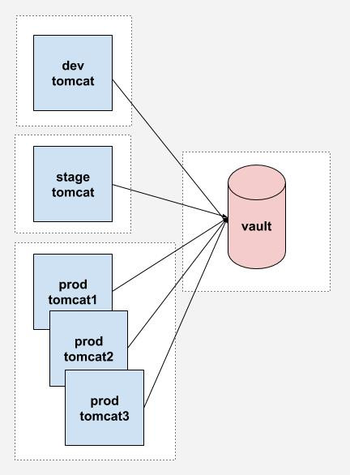

We define a secret as information that can be used to access sensitive data. Pretty much any information that we cannot put on a public repository. That includes:
public class ClientPasswordCallback implements CallbackHandler {
private static final String username = "lesfurets";
private static final String password = "hunter2";
@Override
public void handle(Callback[] callbacks) {
final WSPasswordCallback pc = (WSPasswordCallback) callbacks[0];
if (username.equals(pc.getIdentifier())) {
pc.setPassword(password);
}
}
}
<?xml version='1.0' encoding='utf-8'?>
<Server port="1234" shutdown="SHUTDOWN">
<!-- ... -->
<GlobalNamingResources>
<Resource name="jdbc/b2b2cDatabase"
username="dev"
password="hunter2"
url="localhost:2345"
type="javax.sql.DataSource"
driverClassName="org.mariadb.jdbc.Driver"
jdbcInterceptors="..."/>
</GlobalNamingResources>
<!-- ... -->
</Server>
Remove secrets from code and production machines
Our objective is to have a workflow that works like this:
insurer_password)hunter2)From code to production, different person with different access rights are handling secrets.
If you do infratructure as code, you probably have secrets in your source code. We want to keep infra as code, but remove the secrets.

Lambda architecture batch data layer means you can reconstruct the past "easily"
Lambda infrastructure infra as code means you can reconstruct a machine "easily"
Lambda security means you can trash your secrets and reconstruct them "easily"
At LesFurets we deliver code to production at least daily. Continuous delivery means that it is easy to push a feature to production, and also easy to push an old version in case of emergency.
It also means we can lose the secrets container and still be able to replace it rapidly.
We're using blue / green deployment.
Our machine provisioning and deployment is done with Ansible. It makes staging possible by facilitating the creation of new environment and enables lambda infrastructure.
Many tools are available for secrets management, yet not all will fit your purpose. Making your own custom solution might not be a good idea given how hard it is.
Lightweight, performant, open-source and battle hardened.

Typical use case of Vault is different then what we'll see today: it is often used as a central database serving multiple apps and envs.

There are many ways to do a threat model, one of them is using the STRIDE method.
You do the threat model of your system, and suppose the vendors do the same for theirs (you can ask for it).
There is only one decryption key that can unseal (decrypt) the Vault. It's life-cycle is limited to the memory of the Ansible process running in a Docker on the build machine during deploy.
That means that if any point the Vault is sealed (manually or not), it cannot be unsealed again
This is a possible security breach
In that case, the application needs to be redeployed
There is only one, single use, wrapped token than can provide the session token. Once the wrapped token is used, there is no other way of connecting to the Vault.
If the connexion to the Vault is lost for too long (1 minute), the lease for the session token expires and the app cannot authenticate anymore.
This is a possible security breach
In that case, the application needs to be redeployed
dir('scripts/ansible') {
withCredentials([usernamePassword(credentialsId: 'teamPasswordJenkinsUser',
usernameVariable: 'teamPasswordJenkinsUsername',
passwordVariable: 'teamPasswordJenkinsPassword')]) {
withEnv(["TEAM_PASSWORD_USERNAME=${teamPasswordJenkinsUsername}",
"TEAM_PASSWORD_PASSWORD=${teamPasswordJenkinsPassword}"]) {
sh """
docker pull docker-hub.admin.courtanet.net/ansible
docker run -w /playbooks \
-e TEAM_PASSWORD_USERNAME \
-e TEAM_PASSWORD_PASSWORD \
-v \$(pwd):/playbooks \
docker-hub.admin.courtanet.net/ansible ansible-playbook ./tomcat-b2c.yml \
--inventory=./hosts \
--extra-vars='version=${scmHash} target=${conf.nginxEnvName}'
"""
}
}
}
TODO
[09:31:13] vault - localhost - download from nexus ... | localhost | SUCCESS | 52ms
[09:31:14] vault - localhost - unarchive artifact ... | localhost | CHANGED | 916ms
[09:31:15] vault - localhost - fetch secrets ... | localhost | SUCCESS | 59ms
[09:32:23] vault - localhost - create vault ... | localhost | CHANGED | 5225ms
[09:32:28] vault - localhost - create sealed vault archive ... | localhost | CHANGED | 553ms
[09:32:28] vault - localhost - set vault_key, vault_token ... | localhost | SUCCESS | 120ms
...
Jenkins Credentials storage is used to connect to TPM. Ideally each agent has it's own credentials and each connexion is monitored.
Fetch secrets should not write to disk. Ansible is executed in a docker container with no volume to reduce leakage.
Deployment time is limited with a lease of 10 minutes on the wrapped token. Past that time, the application cannot unwrap the token and will not start.
# Start vault with data and log directory (in the background) and check for startup
nohup vault server -config="conf/install.json" &> logfile &
# (check for startup code omitted)
# Init vault with 1 key, save it and save the root token
vault operator init -key-shares=1 -key-threshold=1 -format="json" > stdout
cat stdout | jq --raw-output ".unseal_keys_b64[0]" > key
cat stdout | jq --raw-output ".root_token" > token
# Unseal vault and authenticate with root token (without ~/.vault-token file)
vault operator unseal "$( < key )"
vault login -no-store "$( < token )"
# setting vault token for next operations
export VAULT_TOKEN="$( < token )"
# Add read only policy (dev, stage, etc.) for environment to vault
vault policy write "${ENVIRONMENT}" "policies/${ENVIRONMENT}.hcl"
# Mount a new key-value store for the environment (/dev, /stage, etc.)
vault secrets enable -path="${ENVIRONMENT}" kv
# Creates a wrapped token (needs to be unwraped before use), TTL is 10 minutes
vault token create \
-orphan \
-renewable="true" \
-policy="${ENVIRONMENT}" \
-ttl="${TOKEN_TTL}" \
-period="${TOKEN_TTL}" \
-wrap-ttl="${TOKEN_TTL}" \
-format="json" \
| jq --raw-output .wrap_info.token \
> wrap
# Write secrets in vault
value=$( echo "${line}" | cut -d '=' -f 2- | sed 's/^@/\\@/g' )
vault write "${ENVIRONMENT}/${key}" "value=${value}"
# Enable audit log with syslog output (then goes to datadog)
vault audit enable syslog tag="vault-${ENVIRONMENT}-${INSTANCE}"
# Revoke root token, only otp tokens remains
vault token revoke $( cat token )
# Seal and close the vault
kill $( cat ${BUILD_DIR}/pid/vault.pid )
# Copy the files necessary to unseal the vault and authenticate
cat key > ${KEY_FILE}
cat wrap > ${TOKEN_FILE}
class ClientFactory {
private static final String RESPONSE_WRAPPING_RESPONSE_PATH_KEY = "creation_path";
private static final String RESPONSE_WRAPPING_TOKEN_VALID_PATH = "auth/token/create";
static Vault initSecureClient() {
try {
LOG.info("Vault using certificate");
SslConfig sslConfig = new SslConfig().pemFile(CERTIFICATE_PATH.toFile()).build();
LOG.info("Vault response wrapping token validation");
Vault vault = new Vault(new VaultConfig().sslConfig(sslConfig).address(ADDRESS).token(TOKEN).build());
LogicalResponse lookup = vault.auth().lookupWrap();
String creationPath = lookup.getData().get(RESPONSE_WRAPPING_RESPONSE_PATH_KEY);
if (!RESPONSE_WRAPPING_TOKEN_VALID_PATH.equals(creationPath)) {
throw logAndThrow("vault wrong wrapping token path '" + creationPath + "' token might be forged");
}
LOG.info("Vault unwrapping login token");
String token = vault.auth().unwrap().getAuthClientToken();
LOG.info("Vault starting secure connexion");
return new Vault(new VaultConfig().sslConfig(sslConfig).address(ADDRESS).token(token).build());
} catch (com.bettercloud.vault.VaultException e) {
throw logAndThrow("secure init failed", e);
}
}
}
TODO demo of dump
TODO make sure you have a fallback or dev mode for your devs
TODO disable mem dump
The only connexion token is kept in memory: use a byte array to prevent direct memory dump exploitation
Secure coding: TODO